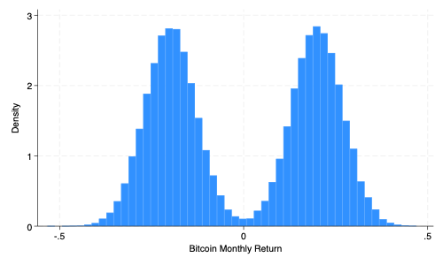
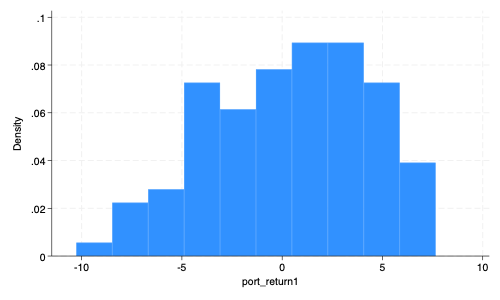

** Set Path **
cd "/Users/egong@middlebury.edu/Library/CloudStorage/Dropbox/Middlebury/Course_Archieve/Spring_2026/ECON_0111/2_Assignments/Labs/Lab_3/"ECON 111 - Lab 3: Intro to Simulations
Asset Allocation
Preliminaries
Before beginning this lab, make sure you’ve:
Created a folder “Lab 3”
Downloaded the necessary data into the folder from the course site
Investment Portfolios
A portfolio is a collection of assets (stocks, bonds, private equity, etc.) designed to have a positive return. Diversifying investments across different asset classes is meant to reduce risk or the variance of returns.
Let’s open up the dataset which has various asset classes and monthly returns. Each observation (row) is a month.
use assets.dta, clear
des
sum
Contains data from assets.dta
Observations: 100,000
Variables: 16 1 Feb 2024 16:01
-------------------------------------------------------------------------------
Variable Storage Display Value
name type format label Variable label
-------------------------------------------------------------------------------
stocks float %9.0g stocks Monthly Return
cmo float %9.0g CMO Monthly Return
cmo2 float %9.0g CMO2 Monthly Return
bonds float %9.0g Bond Monthly Return
bitcoin float %9.0g Bitcoin Monthly Return
option float %9.0g Options Monthly Return
deshaw float %9.0g Deshaw Monthly Return
madoff float %9.0g Madoff Monthly Return
random float %9.0g
deshaw_w float %9.0g
stocks_w float %9.0g
bonds_w float %9.0g
cmo_w float %9.0g
option_w float %9.0g
bitcoin_w float %9.0g
madoff_w float %9.0g
-------------------------------------------------------------------------------
Sorted by: random
Variable | Obs Mean Std. dev. Min Max
-------------+---------------------------------------------------------
stocks | 100,000 .0050113 .0301231 -.1247874 .13557
cmo | 100,000 .0096598 .0699407 -.2624412 .3302454
cmo2 | 100,000 .0029786 .0872246 -.25 .3385656
bonds | 100,000 -.0000329 .0173011 -.0299998 .0299999
bitcoin | 100,000 6.61e-07 .2117275 -.5333434 .468814
-------------+---------------------------------------------------------
option | 100,000 -.0125175 .1243758 -.15 .1
deshaw | 100,000 .2126518 .2291198 0 .4930269
madoff | 100,000 -.0129664 .0181557 -.1406621 0
random | 100,000 .499552 .2886829 4.35e-06 .9999967
deshaw_w | 100,000 .0000501 .211842 -.4792632 .4939655
-------------+---------------------------------------------------------
stocks_w | 100,000 .0050364 .1100412 -.2781485 .321477
bonds_w | 100,000 -.0000204 .0556622 -.1390657 .1413105
cmo_w | 100,000 -.0000204 .0556622 -.1390657 .1413105
option_w | 100,000 -.0124925 .1633427 -.3896316 .3469828
bitcoin_w | 100,000 .0000507 .2999059 -.7950076 .8062297
-------------+---------------------------------------------------------
madoff_w | 100,000 -.0129163 .2126418 -.5098155 .4939655We have 100,000 monthly observations of different assets. CMO stands for collateralized mortgage obligations and involves the bundling of multiple mortgages (i.e. a loan you take to buy a house) that pays out a fixed payment. You can see average monthly returns, the standard deviations, and the returns/losses from the best and worst months for each asset.
Let’s look at the distribution for bitcoin.
histogram bitcoin
graph export bitcoin.png, width(500) replace
What do you think about this distribution? Check out the distributions for the other asset classes.
Suppose we have $100 MM to invest. We will use scalars to set our allocations. You can think of scalars as cells in a spreadsheet that hold specific values.
scalar istocks = 20 /* investment in stocks in MM */
scalar icmo = 50 /* investment in CMO in MM */
scalar ibond = 10 /* investment in bonds in MM */
scalar ibitcoin = 10 /* investment in bitcoin in MM */
scalar ioption = 10 /* investment in calls in MM */
scalar total_invested = istocks + icmo + ibond + ibitcoin + ioption
scalar dirtotal_invested = 100
ioption = 10
ibitcoin = 10
ibond = 10
icmo = 50
istocks = 20Question 1: If I want to reallocate $5 MM from bitcoin to stocks, how would you do that? Remember you need to keep the total amount invested constant at $100 MM.
Value At Risk (VAR)
Financial firms (investment banks, hedge funds, insurance companies) will often assess Value-at-Risk (VAR) for their investment portfolios. The model estimates how frequently a loss of a certain size will occur. For example, a 95% VAR of $5 MM means that there is a 5% probability that you will lose more than $5 MM (or a 95% probability that you don’t lose more than $5 MM).
One way of estimating VAR is to use a Monte Carlo simulation which uses the distributions of returns from various assets.
To simulate the returns of the above portfolio we do the following:
The portfolio is a linear function of the amount invested (see above) and the monthly returns of each asset class
The monthly returns come from the distributions of each asset class
We look at the returns from the first month. Note that _n refers to the observation number.
gen port_return1 = istocks*stocks + icmo*cmo + ibond*bonds + ibitcoin*bitcoin + ioption*option if _n==1
list if _n==1(99,999 missing values generated)
+--------------------------------------------------------------------+
1. | stocks | cmo | cmo2 | bonds | bitcoin | option |
| -.0091141 | .0527175 | .0446299 | -.0187195 | .2720116 | .1 |
|----------------------+----------+----------------------------------|
| deshaw | madoff | random | deshaw_w | stocks_w | bonds_w |
| 4.06e-09 | -.0035448 | 4.35e-06 | -.0083479 | -.013288 | -.0208065 |
|--------------------------------------------------------------------|
| cmo_w | option_w | bitcoi~w | madoff_w | port_r~1 |
| -.0208065 | .095826 | .2636637 | -.0118927 | 5.986513 |
+--------------------------------------------------------------------+We find a return of $5.98 MM. Not bad on an investment of $100 MM!
Question 2: How is “port_return1” a linear function of random variables?
Question 3: What if we wanted to do a second simulation using the returns from the 2nd month? How would you edit the code?
Now we want to simulate the returns for multiple months. One way of doing this is to use a loop. Before you execute the code, write down your predictions on what will happen.
forvalues i = 1(1)100 {
replace port_return1 =istocks*stocks +icmo*cmo +ibond*bonds +ibitcoin*bitcoin +ioption*option if _n==`i'
} quietly {
forvalues i = 1(1)100 {
replace port_return1 =istocks*stocks +icmo*cmo +ibond*bonds +ibitcoin*bitcoin +ioption*option if _n==`i'
}
}Now let’s look at the distribution of monthly returns for our portfolio. We want to see how many times we lose more than $5 MM.
sum port_return1
histogram port_return1
graph export port_return1.png, width(500) replace
count if port_return1< -5
First, based on 100 simulations, the expected return is .366 or $366 thousand which is a monthly return of about .37% (.366/100). The worst simulation loses $10 MM and the best earns $7.6 MM.
The portfolio loses more than $5 MM in 10 of 100 simulations (a 10% chance). Thus the portfolio has a 90% VAR of $5 MM.
Black Swan Events
In finance, black swan events are rare and catastrophic. The 2007-2008 financial crisis and the demise of Long-Term Capital Management in 1998 are examples. They occur when VAR models rely on distributions that underestimate the probability of extreme negative returns in assets. The key is that VAR models are only as useful as the underlying distributions that they rely on; if the distributions are wrong then VAR will also underestimate the likelihood of a loss.
Problem 1: Wrong Distributions
Suppose the distribution for “cmo” is actually “cmo2”.
Question 4: Using the same initial portfolio allocation, use 100 simulations, beginning with the first month, look at the distribution of returns for the portfolio. What do you have to change in the code above? What is the VAR of $5 MM (or what is the probability the portfolio loses more than $5 MM). Hint: generate a new portfolio called “port_return2”.
Question 5: What is key in driving the differences in VAR?
Problem 3: Leverage
Most financial firms borrow heavily which is known as leverage. If the portfolio borrows $100 MM, it can invest $200 MM. This is known as 2:1 leverage. Why do this? It amplifies your returns. You know what else it does? Let’s find out.
Question 8: What do you think the following code does? How much will we have invested in stocks? In bitcoin?
scalar leverage = 2
scalar istocks = 20*leverage /* investment in stocks in MM */
scalar icmo = 50*leverage /* investment in CMO in MM */
scalar ibond = 10*leverage /* investment in bonds in MM */
scalar ibitcoin = 10*leverage /* investment in bitcoin in MM */
scalar ioption = 10*leverage /* investment in calls in MM */
scalar total_invested = istocks + icmo + ibond + ibitcoin + ioption
scalar dir leverage = 2
total_invested = 200
ioption = 20
ibitcoin = 20
ibond = 20
icmo = 100
istocks = 40Question 9: Now simulate the 2:1 leveraged portfolio 100 times, using “stocks2” and “cmo2” along with the original asset distributions. What’s the avg return or expected return? What’s the VAR at $5 MM? What does the distribution look like?
Conclusion
The first takeaway is that we can think of asset returns as random variables. In this simulation, the dataset provides the distribution for each random variable (asset). Using a distribution, we can find the parameters (mean, variance) as well as the shape/type of distribution. The portfolio itself is a linear function of multiple random variables and thus is a random variable with its own distribution (i.e. portfolio returns).
The second is that many financial crises involve all three problems listed above working together to produce catastrophic losses resulting in bank runs, bankruptcies, and the involvement of regulators such as the Federal Reserve. These crises impact society at large and the greatest burden is typically borne by the people least able to weather it.